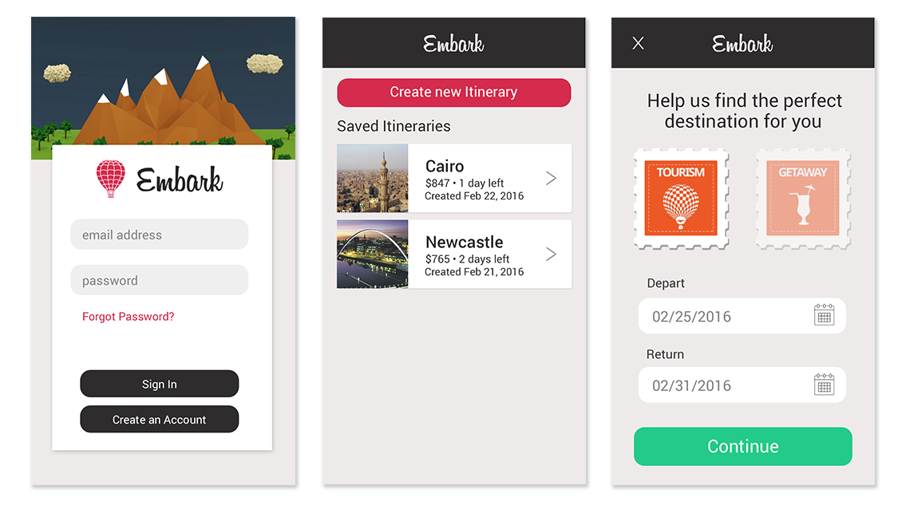
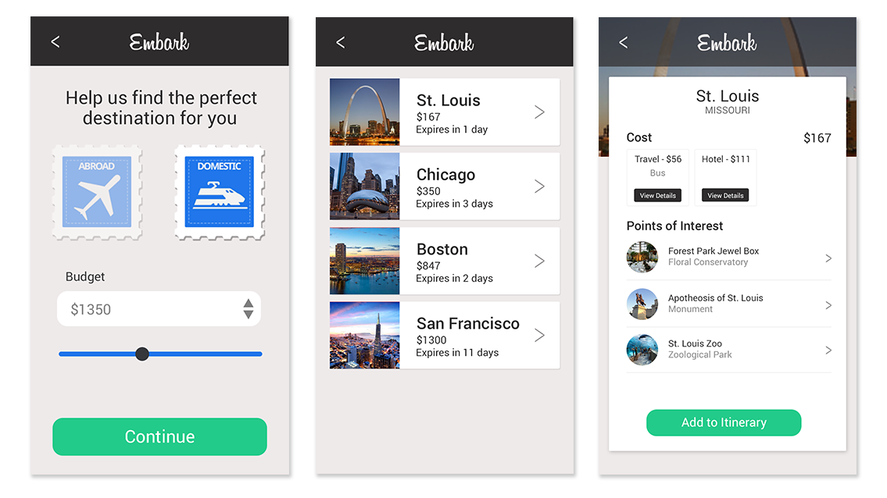

Introduction
This is my team's project for HackIllinois 2016. We leveraged Amadeus' Innovation Sandbox API to create an application that prepares extensive travel itineraries with minimal input from the user. My contribution to the project was designing the application's interface and then implementing it using HTML, CSS and JavaScript in the form of static templates, which would then be hooked up to the backend. Though there isn't a lot of room at a hackathon to perform extensive research, my focus for developing the UI was a result-first approach, requiring minimum input from the user to tap into the API and obtain results for itineraries.
Scoping
Since this was my first hackathon experience, I learned the importance of scoping out the application through prototyping at an early stage in the process. Because of the time limitation and the unfamiliarity with the intricacies of the API, attempting something complicated has to start from the beggining of the hackathon. It almost becomes impossible to follow an iterative approach. It's infeasible to add a new feature in the middle of the application development process, which is why the scope of the application has to be clearly defined, and not making low-fidelity prototypes at the start forced us to discard certain features we had in mind.